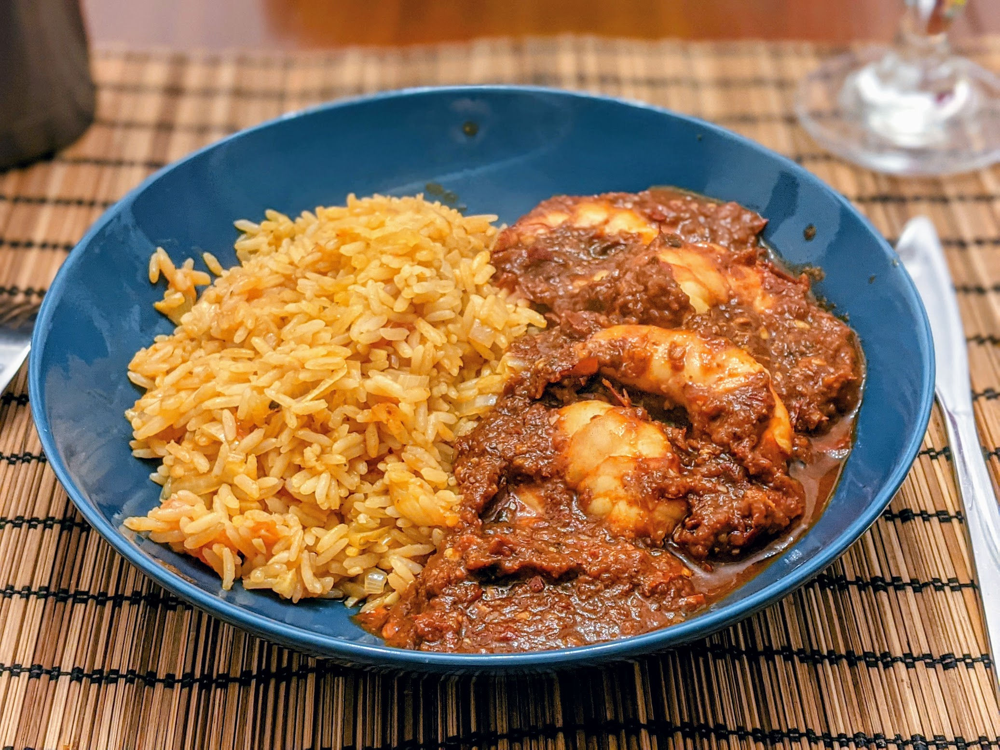

Riz mexicain

Ici avec des camarones a la diabla
Pour trois personnes :
- 225g de riz
- Une grosse tomate
- Un oignon
- Trois gousses d'ail
- Un demi-litre de bouillon de poulet ou de légumes
- Une cuillère à soupe de concentré de tomates
- Sel, poivre, huile d'olive
- Faire chauffer une quantité généreuse d'huile d'olive dans une casserole à feu moyen-fort. Pendant que ça chauffe, rincer le riz.
- Faire sauter le riz dans la casserole quelques minutes, en mélangeant régulièrement, jusqu'à ce que le riz commence à prendre une couleur légèrement brune.
- Pendant ce temps, laver les tomates et les couper en petits morceaux, éplucher et émincer l'oignon et l'ail, et les ajouter dans la casserole une trentaine de secondes.
- Ajouter le bouillon et le concentré de tomates, saler, poivrer, et mélanger jusqu'à ce que le concentré de tomates soit dissous.
- Porter à ébullition, puis réduire le feu et laisser mijoter avec un couvercle une vingtaine de minutes, jusqu'à ce qu'il n'y ait plus d'eau au fond. Déguster chaud.
Retour à la liste des recettes